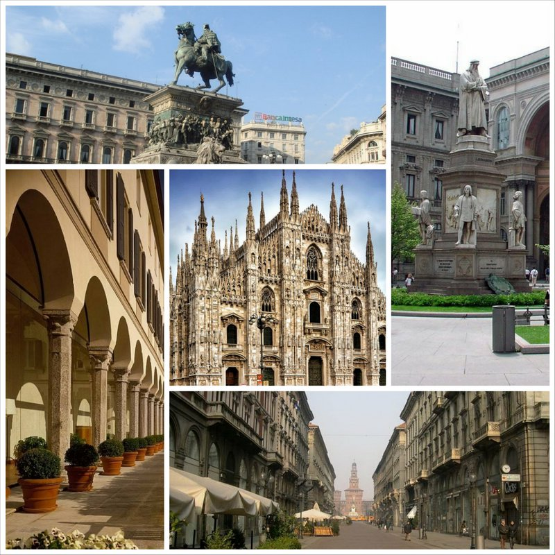

Milano

Милан – второй по величине город Италии, ее важный торговый, экономический и научный центр. Он расположен в северной части страны, в регионе Ломбардия, и делится на девять районов. Численность населения – чуть более миллиона человек, но эта цифра постоянно растет, ведь эти места привлекают возможностью получить престижную профессию или высокооплачиваемую работу. Милан – признанный центр моды и стиля, однако это только одна из сторон города. Буквально с первых минут можно
ощутить его отличие от древнего и торжественного Рима – здесь кипит активная жизнь, подписываются договоры, создаются компании, открываются новые отрасли производства. Однако в то же время на всем лежит явный отпечаток славной истории. Те, кто приезжает сюда впервые, будут поражены многоликостью города – старина и современность переплелись настолько тесно, что без какой-либо детали, будь то офисное здание или средневековая статуя, этот ансамбль не будет полноценным. Главная достопримечательность Милана, его сердце – кафедральный собор Санта Марии Нашенте. Он выполнен в готическом стиле из
белого мрамора и поражает красотой внешнего оформления. Фасад украшен башенками, статуями святых, композициями, изображающими библейские истории, фигурами диковинных существ, в том числе горгулий. Над всем этим возвышается фигура Мадонны – именно она считается покровительницей города. Есть в Милане и старинные замки. Самых знаменитый из них – бывшая резиденция герцогов Сфорце, оставивших наследникам величественную крепость 14 века. В ее декорировании принимал участие сам Леонардо да Винчи, однако до наших дней его
работы практически не сохранились. Ныне Замок Сфорческо превращен в музей – в его залах собраны уникальные картины и статуи признанных мастеров. Украшением коллекции является неоконченная скульптура работы Микеланджело. Переходя из комнаты в комнату, посетители будут знакомиться с особенностями развития культурных тенденций. При желании можно
заказать экскурсию, однако это необязательно – для каждой экспозиции подготовлены информационные буклеты на различных языках, в том числе и на русском. Милан занимает одно из ведущих мест среди городов Италии по количеству художественных галерей. При этом поражают великолепием не только коллекции произведений искусства, но и сами здания, в которых они хранятся.
← На главную